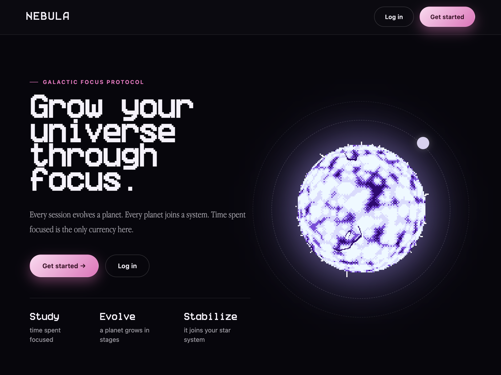
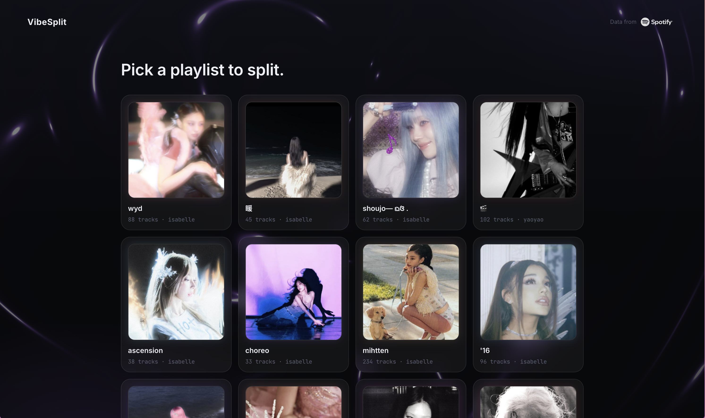
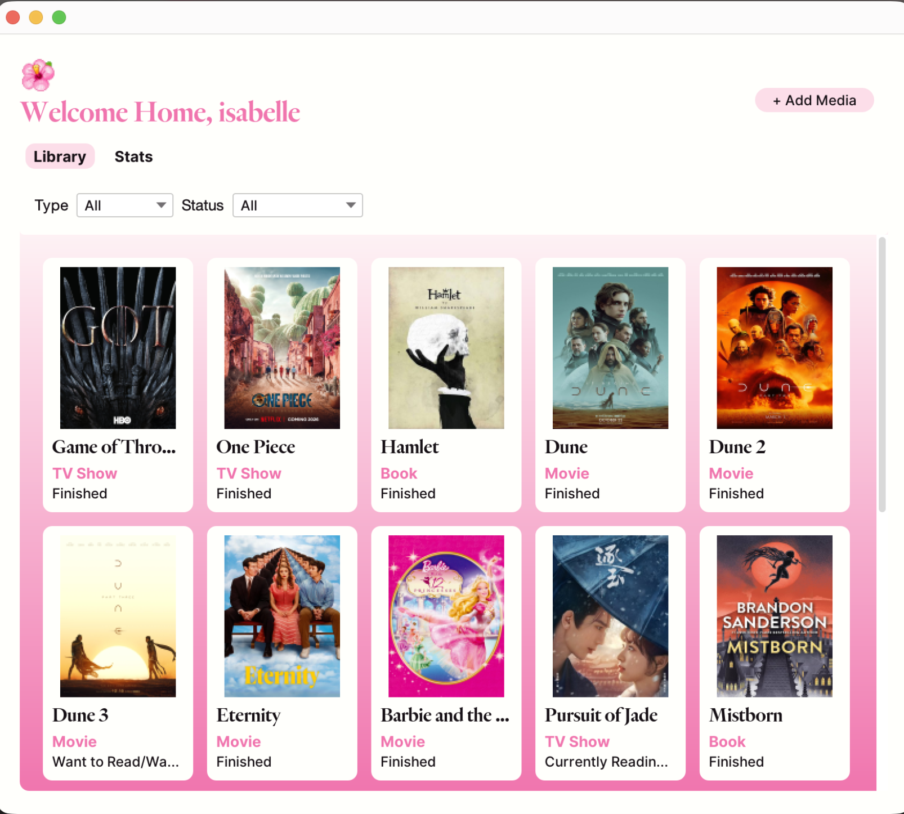

study time, turned into a tiny universe.
Nebula
Nebula is a gamified focus app that turns hours of studying into evolving pixel-art planets. Every subject gets its own star, and as focus sessions add up, that subject's planet grows through visual stages until it settles into a permanent star system. Full stack, with live focus tracking, session history, and weekly insight dashboards.
View project
your playlist, sorted by vibe, not chronology.
VibeSplit in progress
VibeSplit connects to Spotify, takes one big sprawling playlist, and splits it into smaller playlists that actually feel coherent, using clustering plus an LLM to name each group. I designed the full frontend flow myself, from login through clustering to an interactive preview where you can drag tracks between clusters by hand.
View project
a nearest-neighbor search, built from scratch.
HNSW ANN Index
A graph-based approximate nearest-neighbor index written from the ground up in C++, hitting 94.3% recall at 100,000-vector scale against a brute-force baseline. It's exposed to Python through pybind11 and powers a movie recommendation engine across more than 9,000 titles.
View project
one place for every book, show, and movie I forget I started.
MediaLibrary
A desktop app for tracking books, movies, and TV shows in one library instead of a messy notes app. It handles status tracking, ratings and reviews, and simple stats on what you actually finish. Built with a 25-class UML architecture and full JUnit test coverage.
View project